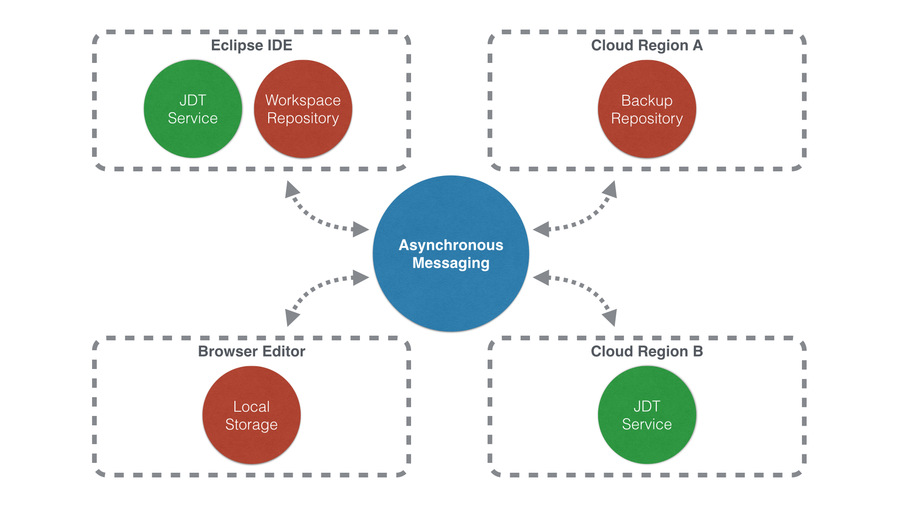
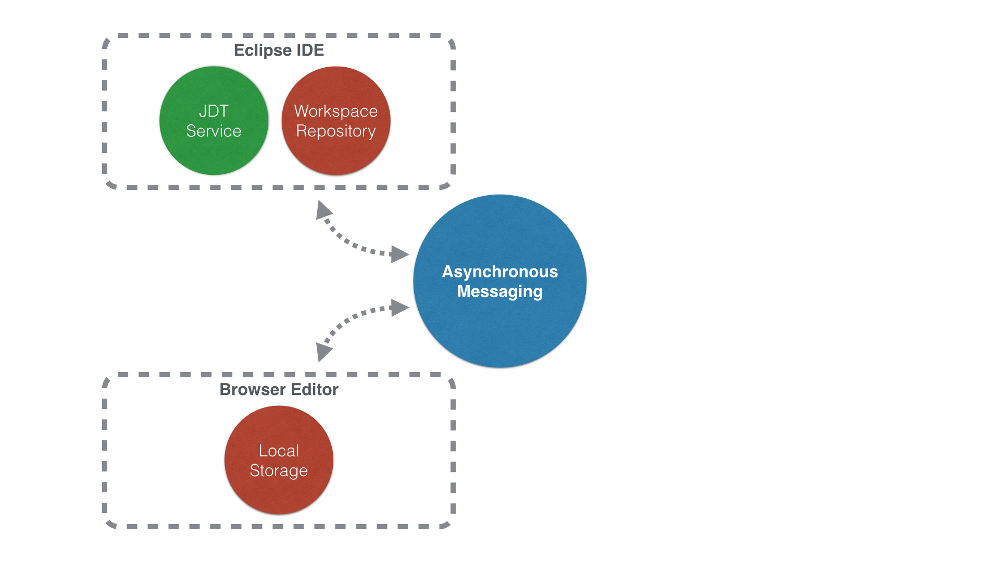
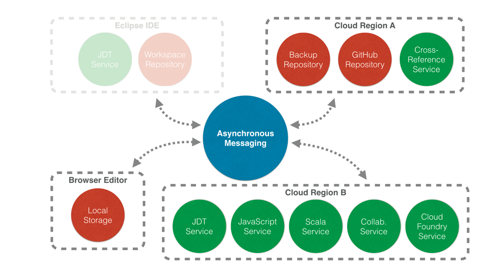

Connecting the Eclipse IDE to the Cloud-Based Era of Developer Tooling
JavaOne 2014
Martin Lippert - Pivotal / @martinlippert
John Arthorne - IBM / @jarthorne
Existing Desktop Tools
- Large range of editors from basic to full IDEs
- Huge ecosystem of plugins
- Works with other local tools
- Great for working offline
- Cross-platform (sort of)
Cloud as Tool Platform
 Source: Sam Johnston Creative Commons BY-SA 3.0
Source: Sam Johnston Creative Commons BY-SA 3.0
Cloud advantages
- Truly cross platform (tablets, servers, desktops ...)
- Extreme scalability (up and down)
- Enables live remote collaboration
- Low cost tool configuration
- Toolchain control
Current state of cloud tooling
- Current tools demonstrate what is possible
- Huge gaps in the available tool chain
- Will take years to catch up to desktop tools ecosystem
A difficult choice
- Stay with desktop tools and live with desktop constraints
- Take the leap to the cloud, and leave existing tools behind
- But what if you could have both?
Flux Demo
- Connect Eclipse project to Flux
- Java syntax validation
- Content assist
- Jump to declaration (F3)
- Rename in file
Current Architecture
Desktop Architecture
Cloud Architecture
Work Areas
- Basic infrastructure: messaging system, repository synchronization
- Cloud-based Java language tooling
- Cloud-based JavaScript language tooling
- Application deployment and execution services, possible debug integration
- <enter your work area here>
References
Questions?